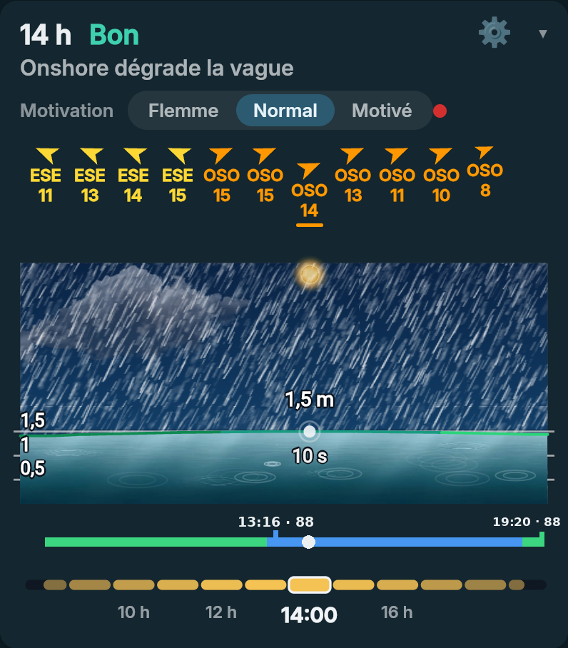
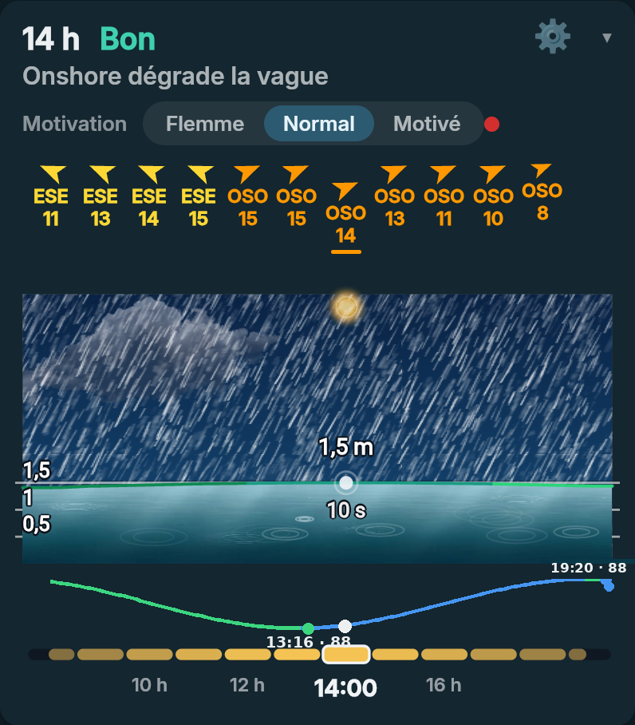
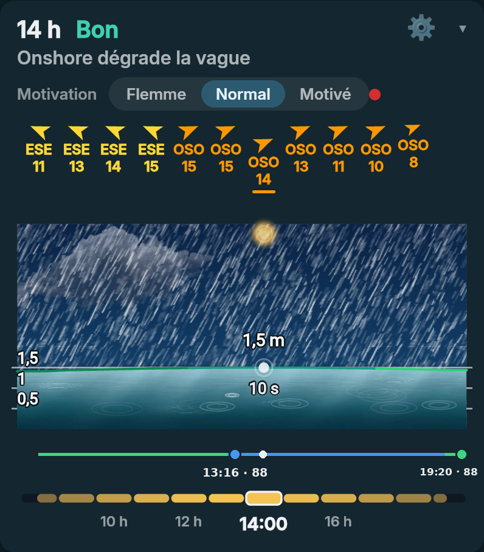
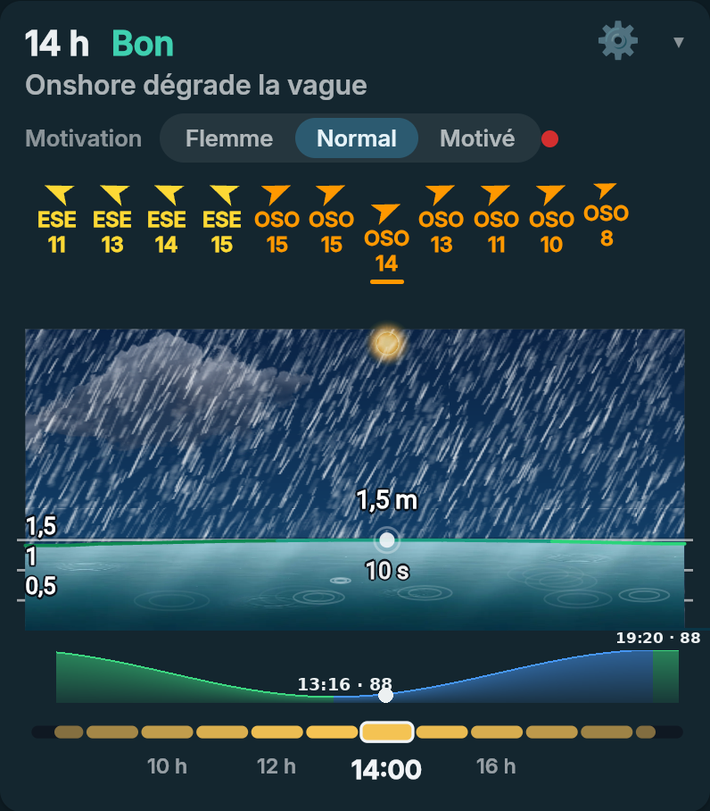
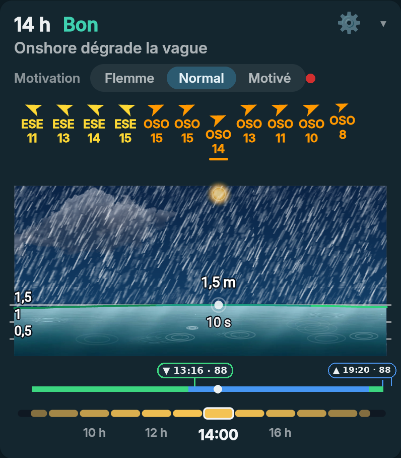
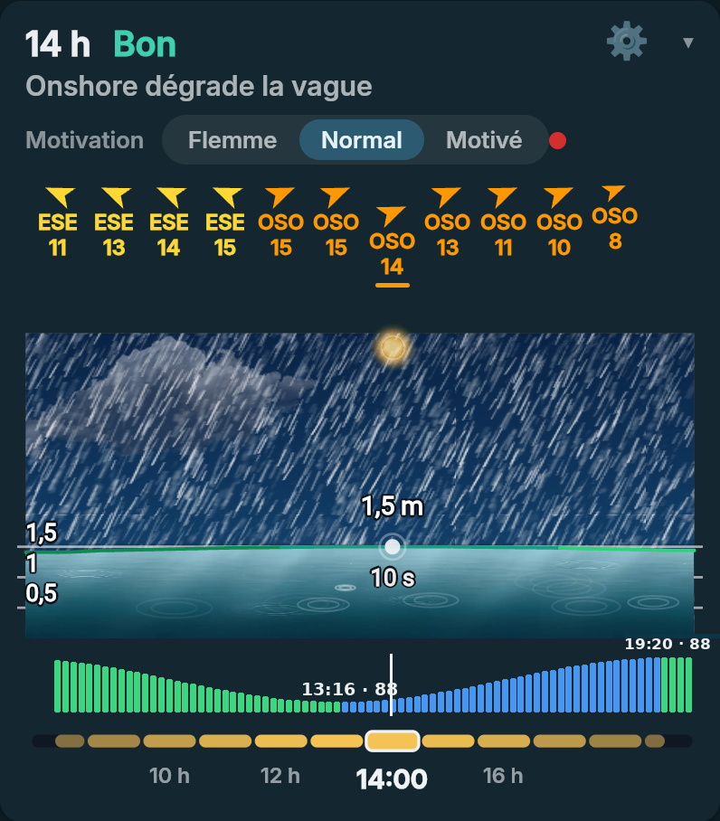

<title>Marée du déroulé</title>
<style>
/* Mise en page : six propositions d'affichage de la marée sous le déroulé de la journée, chacune sur la vraie carte sombre. Fond sombre de l'appli. */
:root{--bg:#0b1519;--card:#14262f;--fg:#ecf0f1;--mut:#90a4ae;--link:#7fc3e6;color-scheme:dark}
*{box-sizing:border-box}body{background:var(--bg);color:var(--fg);font-family:system-ui,sans-serif;font-size:14px;line-height:1.4;padding:20px 16px}
main{max-width:470px;margin:0 auto;display:flex;flex-direction:column;gap:10px}
h1{font-size:1.25rem;margin:0}h2{font-size:1rem;margin:16px 0 0;color:var(--link)}p{margin:0}.mut{color:var(--mut)}.sm{font-size:12px}
img{width:100%;border-radius:12px;display:block;margin-top:6px}
:root[data-theme="light"]{--bg:#e8eef2;--card:#fff;--fg:#10222e;--mut:#5a6d7a;--link:#0f5f8c;color-scheme:light}
</style>
<main>
<h1>Marée du déroulé</h1>
<p class="mut sm">Vert : la marée descend. Bleu : elle monte. À chaque changement (marée basse, marée haute), l'heure est écrite avec le coefficient, séparés par un point. Exemple : basse à 13 h 16, haute à 19 h 20, coef 88. Le point blanc marque l'heure actuelle.</p>
<h2>1 · Barre continue, avec cheminée</h2><p class="sm mut">Ta proposition : une barre de gauche à droite, verte puis bleue, avec une minuscule cheminée à chaque changement et l'heure au-dessus.</p>
<h2>2 · Courbe colorée</h2><p class="sm mut">La vraie forme de la marée, colorée vert/bleu, avec un point et l'heure à chaque extrême.</p>
<h2>3 · Trait fin et gros points</h2><p class="sm mut">Le plus léger : un trait fin, deux gros points, l'heure en dessous.</p>
<h2>4 · Aire remplie</h2><p class="sm mut">Comme la courbe, mais remplie : on voit le volume d'eau.</p>
<h2>5 · Barre et pastilles</h2><p class="sm mut">Barre continue, avec une pastille « ▼ / ▲ heure · coef » par changement.</p>
<h2>6 · Petites barres de hauteur</h2><p class="sm mut">Une barre par tranche de temps, verte en descente, bleue en montée.</p>
</main>
